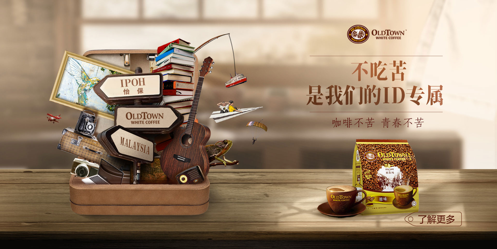
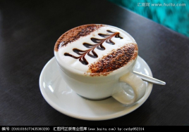
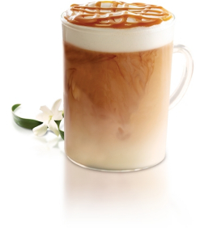

| 咖啡 | 价格 |
| 拿铁 | ¥24 |
| 美式咖啡 | ¥24 |
| 卡布奇诺 | ¥27 |
| 焦糖玛奇朵 | ¥24 |
拿铁
拿铁咖啡是意大利浓缩咖啡(Espresso)与牛奶的经典混合，意大利人也很喜欢把拿铁作为早餐的饮料。意大利人早晨的厨房里，照得到阳光的炉子上通常会同时煮着咖啡和牛奶。
美式咖啡
“美式咖啡”(英文: American，意大利语: Caffe Americano)和啡的一种，是最普通的咖啡。是使用谪滤式咖眸壶所制作出的黑咖哮，又或者是意式浓缩中加入大量的水制成。
卡布奇诺
2O世纪初期，意大利人阿奇布夏发明蒸汽压力咖啡机的同时，也发展出了卡布奇诺咖啡。卡布奇诺是一种加入以同量的意大利特浓咖啡和蒸汽泡沫牛奶相混合的意大利咖啡。
焦糖玛奇朵
焦糖玛奇朵《英文:Caramel Macchlato)是在香浓热牛奶上加入浓缩咖啡、香草，再淋上纯正焦糖而制成的饮品，融合三种不同口味。Macchiato意大利文。意思是“烙印”和"印染"，中文音译“玛奇朵”。"Caramel"意思是焦糖。